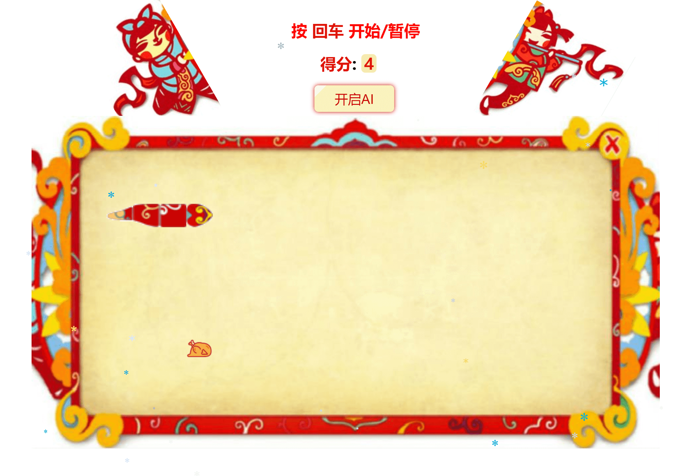
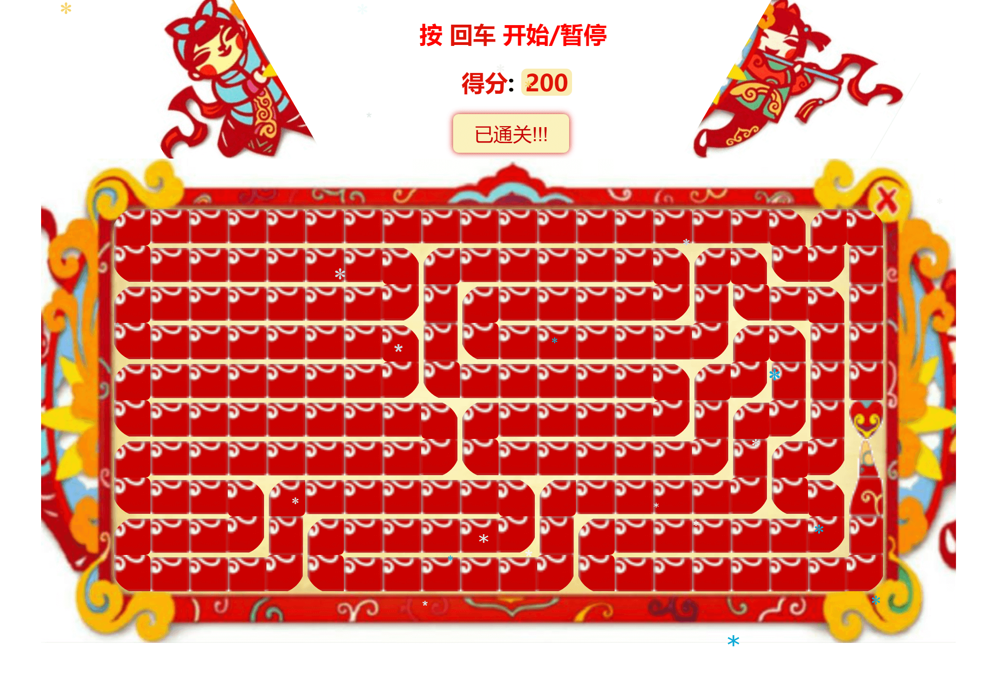

江 雷
前端工程师
电话:15629053975
- 邮箱: jarrelljl@163.com
- QQ: 364002527
- About me
- 我是一个充满活力、对前端由衷的热爱、善于发现问题并忠于解决问题的人。喜欢接触新事物，学习能力强，具有良好团队合作意识和沟通能力。
-
- Basic info. 基本信息
- 个人信息: 江雷 / 男 / 25岁
- 教育经历: 本科 / 武汉轻工大学(2010.9-2014.7) / 机械专业
- 英语水平: CET-6,英语基础良好
-
- Experience. 项目与工作经验
武汉云竞信息技术有限公司（2015.9 - 2016.10） 前端开发
-
参与公司内部电子商务系统的前端开发，包括供应商管理、采购、产品列表、月报表等几大功能。
-
编写商品详情页面，根据优化需求，进行系统页面的更新和维护。
-
主页使用Bootstrap和AngularJS实现前端组件及数据交互，商品详情页使用jQuery/jQueryUI设计实现，基于Chart.js完成图表的创建。


武汉龙才企业管理有限公司（2015.5 - 2016.8） 前端实习
个人项目
-
贪吃蛇游戏 源代码 Demo
1.原生JS实现的贪吃蛇游戏，主要功能模块包括：生成地图、开始和暂停、游戏等级关卡、游戏结束以及计分板等等，并优化了蛇身移动以及方向过渡的视觉效果。
2.在完善游戏、解决BUG的过程中，我对面向对象编程有了更深的理解，我的JavaScript能力和逻辑思考能力也得到了较大的提升。
 -
eating 源代码 Demo
1.一个基于AngularJS的SPA订餐应用，包括起始页、主页、详情页、订单页等几个页面。
2.模板页面内容基于Bootstrap完成，使用AngularJS实现数据交互和过场动画，基于php+mysql完成接口及数据的存储，使用Browsersync+Gulp完成本地调试及重载。


-
QQ音乐主页 源代码 Demo
1.仿写的QQ音乐主页，并增加了多种效果。使用html+css完成页面布局，原生JS完成滑动轮播图、分页切换等交互和功能。
2.使用HTML5新特性完成表单验证以及音频功能，并使用SVG完成用户头像效果的绘制。
3.使用php和mysql完成后台，AJAX请求Json数据并用JS解析，完成了异步登录注册功能。


-
个人主页 源代码 Demo
1.使用原生JS脱离插件和库完成，全屏风格，包括主页、技能、爱好等多个栏目。
2.采用rem布局，在不同屏幕宽度下实现自适应。使用SVG完成头像效果。


-
网易游戏首页 源代码 Demo
1.此页面主要用jQuery+CSS3完成，页面动态效果丰富，以较好的体验展示了各种信息流。


-
- Skill. 技能清单
HTML/CSS
-
熟悉w3c标准，能够熟练编写语义化的HTML，模块化的CSS，实现复杂的布局与动画 ，并且解决浏览器兼容问题。
-
熟练掌握CSS3的新特性，能够利用其完成多种动画效果。熟悉已标准化的HTML5新特性，如音视频的处理、表单验证、localstorage、基于canvas和SVG进行基本的图形绘制。
JavaScript
-
熟练掌握原生JavaScript的语法、JS中的面向对象编程，能够用原生JS代码实现各种功能。
-
熟练掌握原生DOM与BOM的使用及相关标准（W3C），能够实现常用的交互和功能，了解前端组件的开发。
-
熟悉JSON、XML数据交互格式，能熟练使用AJAX实现和后端的异步交互。
-
了解ECMAScript6新特性与JavaScript性能优化方面的一些知识。
前端工程实践
-
熟悉jQuery/jQueryUI/Bootstrap的使用、定制与扩展，阅读过部分源代码。
-
熟悉AngularJS，使用其编写过单页面应用，了解前端MV*模型。
-
熟悉Git版本控制系统，并将代码部署到GitHub Pages。日常使用Gulp改进工作流。
-
目前正在关注并学习vue.js和node.js。
后端
-
了解PHP语言，能够完成简单服务器端开发，实现和前端的交互。熟悉MySQL数据库，能够使用sql语句进行数据库的增删改查。
-
了解HTTP协议、WebSocket协议及其优化。
其他
-
熟悉sublime text、webstorm及Dreamweaver的使用。
-
能够使用Photoshop/CorelDRAW完成简单的设计。
-
在校获得过全国计算机二级(C语言)证书，自学能力和逻辑思维能力强，喜欢钻研。